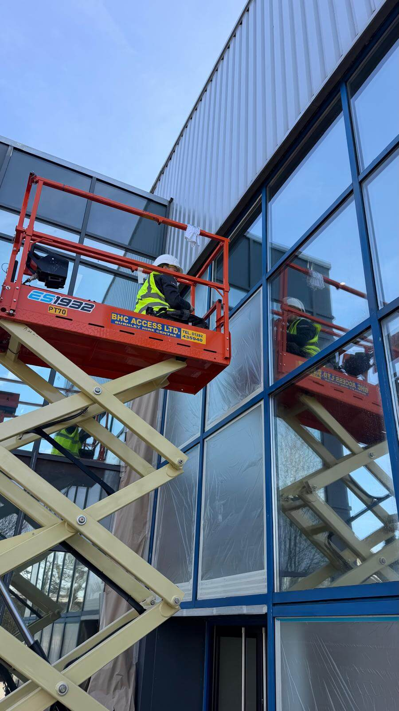
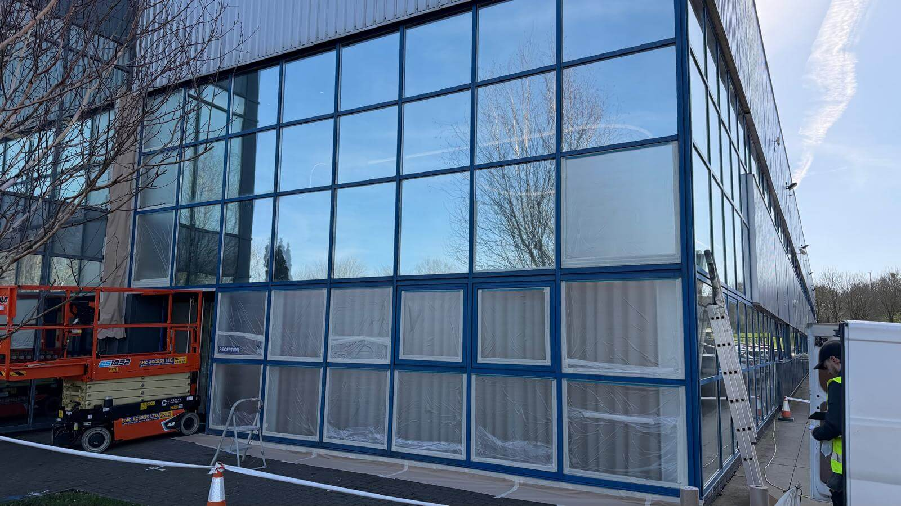
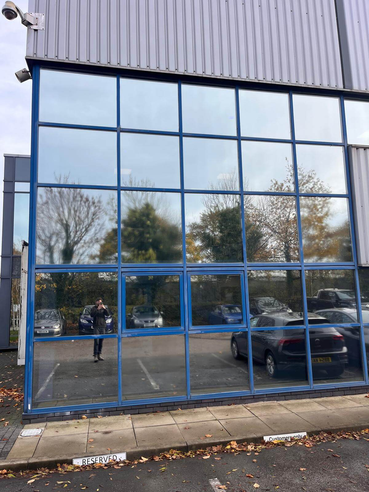
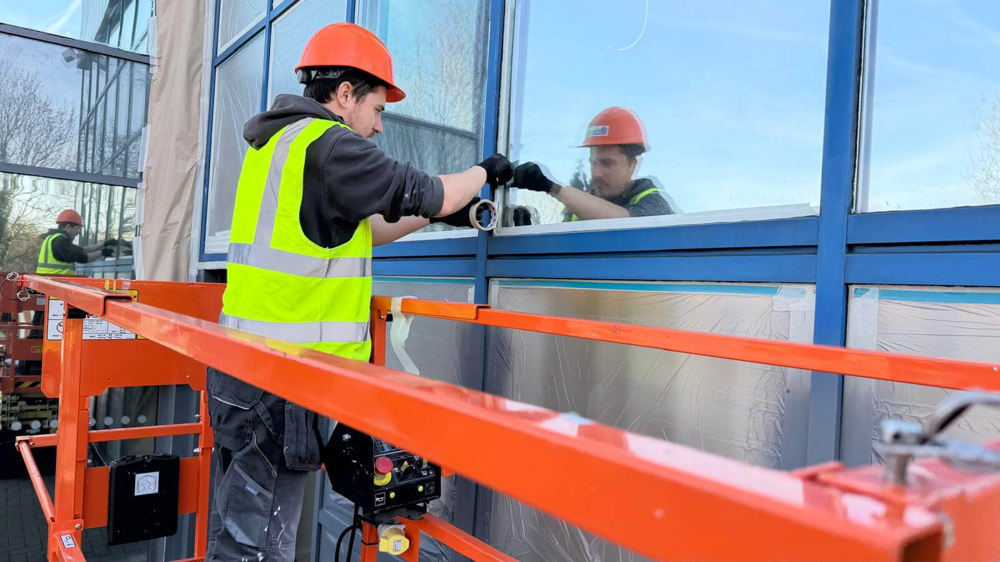
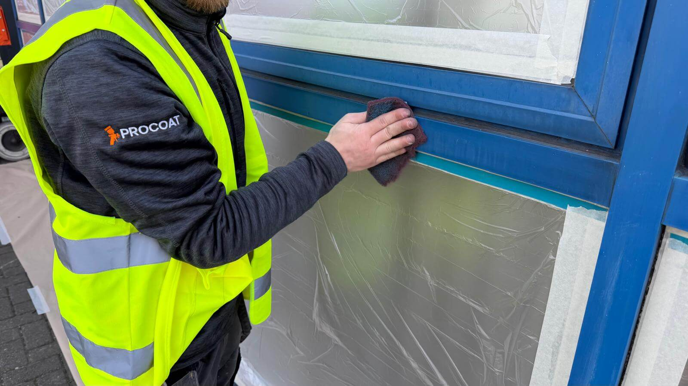
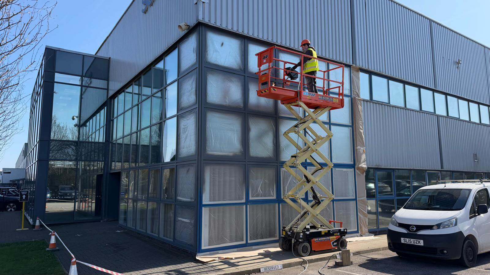

We completed a full external window frame respray on a commercial building in Altham, Padiham, transforming tired, worn frames into a clean, modern finish without the need for costly replacement.
The goal was simple: improve the building’s appearance while keeping disruption to a minimum and maintaining a professional standard throughout. Replacing the frames would have been expensive and unnecessary, as the structure itself was still completely sound.
The existing window frames had become faded and worn over time, leaving the front of the building looking dated and inconsistent.
First impressions are everything for a commercial property. Replacing the frames would have required a massive budget and caused significant structural disruption to the daily running of the business.
The Smart Alternative: Because the frames were structurally sound, they were the absolute ideal candidate for a professional spray finish, saving thousands over a full replacement.
We deployed a systematic approach tailored to large-scale commercial environments:
All glass, surrounding areas, and walkways fully protected for zero overspray.
Safe sectioning allowed the building to remain in use for staff throughout.
Scissor lift utilized to safely and efficiently access all upper levels.
Silenced air compressor used to apply a smooth, factory-quality finish.
The transformation was immediate. The building now has a sharp, modern appearance with a uniform finish across all window frames — significantly improving its external look and overall presentation. By choosing spray painting over replacement, the client achieved a complete visual upgrade at a fraction of the cost.






Whether it's shopfronts, commercial window frames, or industrial units, our professional respraying services ensure minimal downtime and maximum visual impact.
Get a Commercial Quote